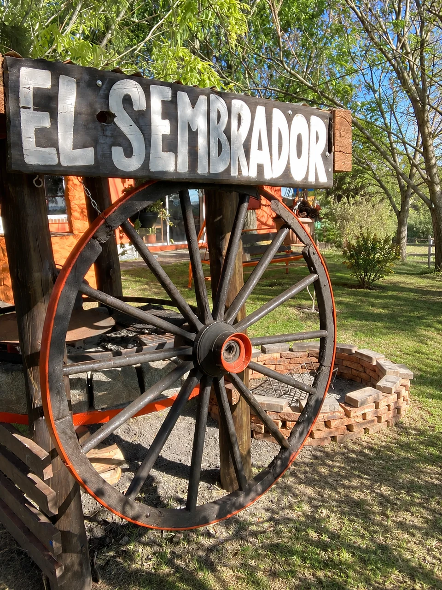
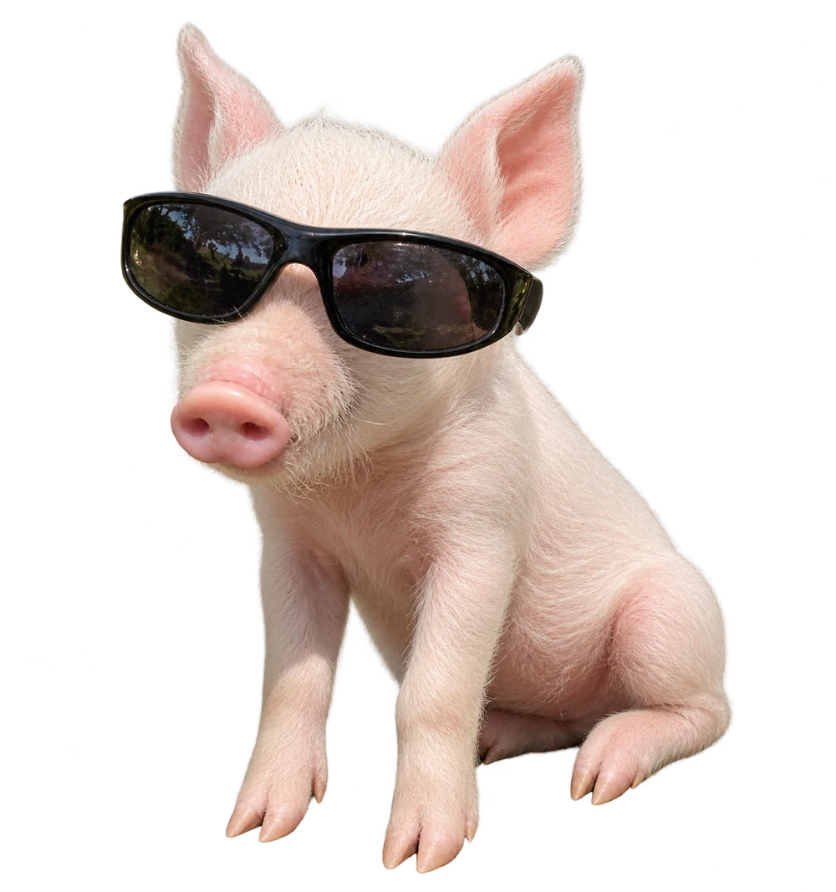
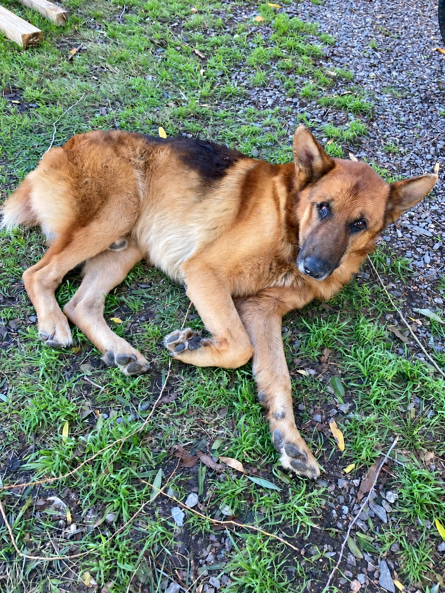
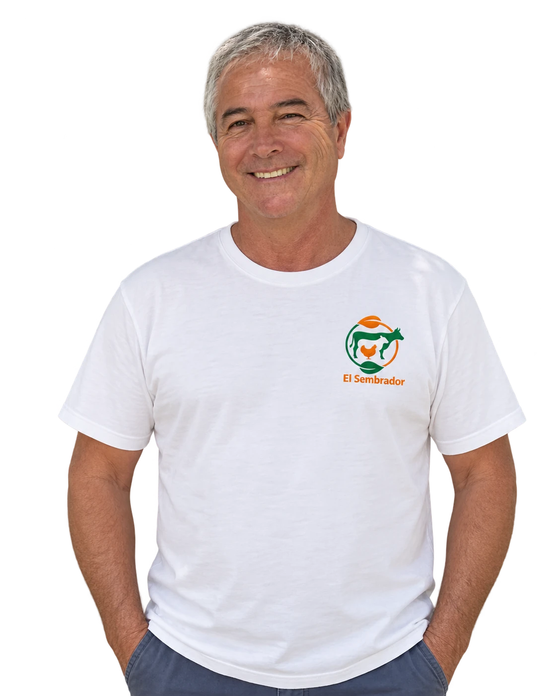
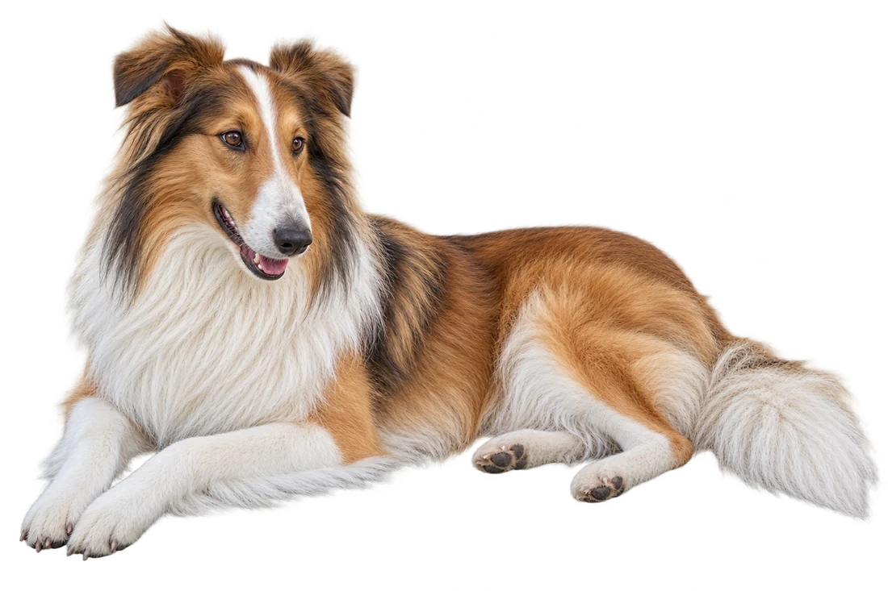

EL SEMBRADOR · SAN ANTONIO
Cada comienzo
merece
cuidado.
Recría, raciones y experiencia avícola.
El trabajo de Julio Díaz, cerca de tu producción.
RUTA 81 · KM 35,500 · URUGUAY
TODO POR DELANTE.
01 / RECRÍA DE POLLITAS
Un buen inicio.
Una gran
diferencia.
Recría y venta de pollitas bebé. Para acompañar tu producción avícola desde sus primeros días, con atención cercana.
Consultá por pollitasestá en los detalles.
02 / RACIONES BALANCEADAS
Nutrir hoy.
Crecer mañana.
Cada etapa pide algo distinto. Raciones para aves y ovinos, con opciones para acompañar tu producción.

EL SEMBRADORSan Antonio.
03 / NUESTRA GRANJA
Un lugar
con historia.
El trabajo, los animales y el trato de todos los días.
Acá está El Sembrador.
Acá, cada uno
tiene su lugar.


Siempre en el recuerdo.

JULIO DÍAZExperiencia, de cerca.
04 / UNA VIDA ENTRE AVES
Julio
Díaz.
Empezó a trabajar con aves alrededor de los 20 años. Su trayectoria está ligada a los productores de Canelones y a un conocimiento cercano de la zona.
Trabajó en Perú y participó en congresos internacionales. A lo largo de su carrera trabajó con grandes productores como El Poyote y San Isidro, entre otros.
A campo. A domicilio.
05 / CONTACTO DIRECTO
Hablemos de
tu producción.
Contale a Julio qué necesitás.
La conversación empieza por WhatsApp.
TIBU.Jefe de Seguridad
y OperacionesSiempre cerca.

EL SEMBRADOR · SAN ANTONIO
Ruta 81, km 35,500